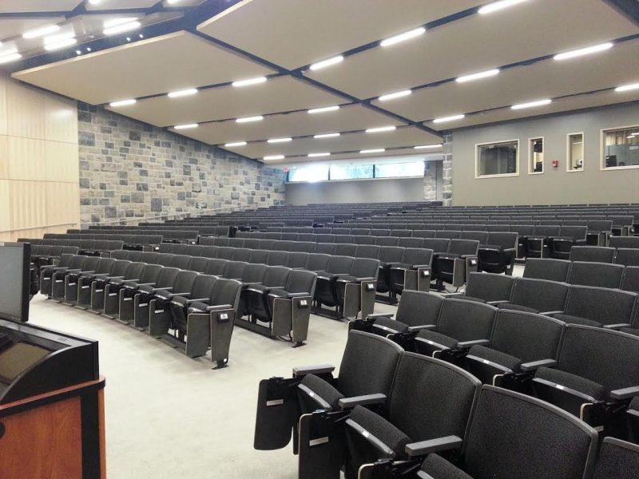

Welcome!
This page was created to explore the professors of five courses offered at Virginia Tech. All courses in the Navigation Bar are currently being taught in Fall 2018. Click on each to explore information about the course and the professors who teach them. Navigate through each course through their link on the left-hand side of the welcome page.
